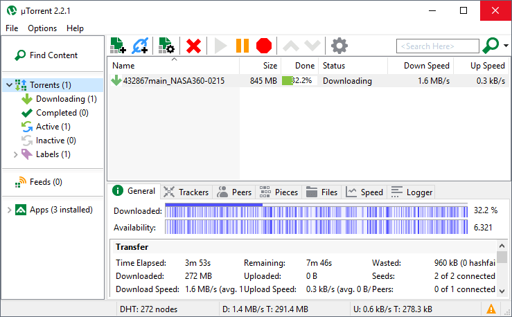

uTorrent 2.2.1 Build 25302uTorrent é um client BitTorrent eficiente e rico em recursos para Windows, com um tamanho muito pequeno. A maioria dos recursos presentes em outros clientes BitTorrent estão presentes no uTorrent, incluindo priorização de largura de banda, agendamento, download automático de RSS e Mainline DHT (compatível com BitComet). O uTorrent foi projetado para usar o mínimo possível de CPU, memória e espaço, ao mesmo tempo em que oferece todas as funcionalidades esperadas de clientes avançados. Ao contrário de muitos clientes torrent, ele não monopoliza recursos valiosos do sistema, permitindo que você use o computador como se ele nem existisse. uTorrent 2.2.1 Build 25302 changelog / version history / release notes:  uTorrent Interface Versão: 2.2.1 Build 25302 (18 Maio 2011) |